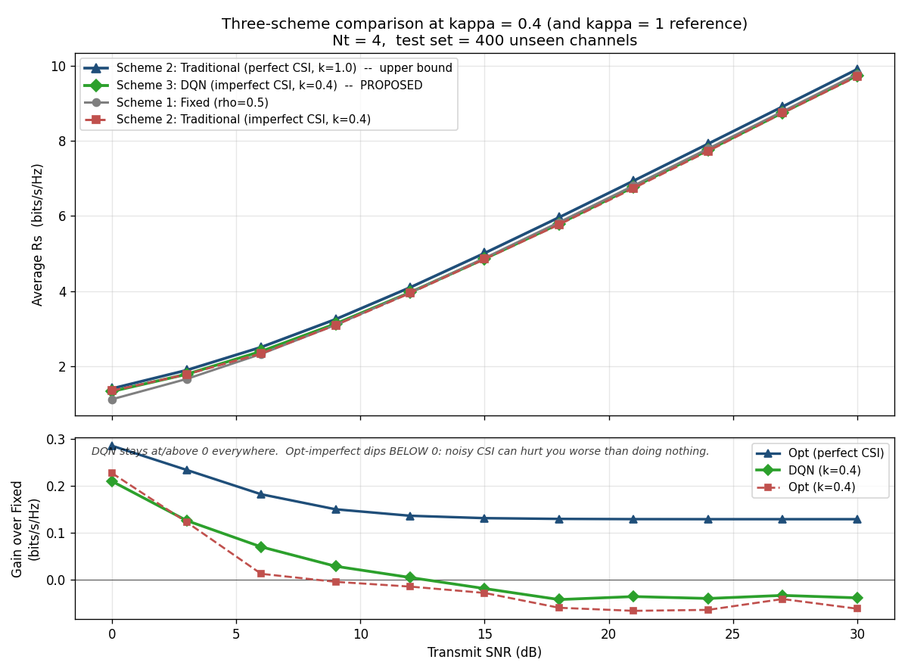

A visual story about sending a private message over the air — no encryption, just physics — and what goes wrong when the sender doesn't really know where the eavesdropper is.
Encryption was busy. We brought physics.
Alice is the transmitter. She has several antennas, so she can shape what she sends — point it, twist it, spread it out. Bob is the friend she wants to talk to. Eve is parked nearby, listening to whatever leaks out. There is no key, no passphrase, no encryption. Whether Bob ends up the only person who understands the message comes down to physics: how Alice arranges her power across antennas.
Alice doesn't put 100% of her power into the message. She splits it. A fraction ρ goes into the signal beam aimed at Bob. The remaining (1-ρ) goes into artificial noise: random gibberish, deliberately shaped so that Bob's antenna cancels it out perfectly while Eve's antenna gets blasted with it.
That cancellation isn't magic — it's a geometric trick called null-space projection. With multiple antennas, Alice can mix the noise across her antennas in just the right way that the components destructively interfere at Bob's location and add up at every other location. Bob hears a clean signal. Eve hears a clean signal smothered in static. The bigger the gap between what Bob hears and what Eve hears, the more privately Alice and Bob can talk.
How much of the power should be signal, and how much should be jamming? Drag the dial. Push ρ → 1 and Bob hears everything — but so does Eve. Push ρ → 0 and Eve gets nothing — but neither does Bob. Somewhere in the middle there's a peak: a value of ρ that maximises the secrecy rate — the gap between what Bob can decode and what Eve can decode.
The first two are pulling in opposite directions. The bottom bar is what actually matters — the private bandwidth between Alice and Bob.
To compute that sweet spot, Alice needs to know Eve's channel — which way Eve's antenna is "pointed", how strong the link is. In real life she only has an estimate. We measure that estimate's quality by a number κ: κ = 1 means Alice knows Eve perfectly, κ = 0 means Alice's "estimate" is pure hallucination, and real systems live somewhere in between (we use κ = 0.4 as our headline case).
Drag the slider below. Eve's true position stays put; what changes is the fuzzy halo — the region Alice thinks Eve might be. As the halo grows, any math Alice does is being lied to.
When the halo is small (κ near 1), Alice's optimisation is solving the right problem. When the halo is large (κ near 0), Alice is confidently solving the wrong problem. The next chapter shows what each strategy does about it.
Three strategies, same job: pick a value of ρ. First, choose how good Alice's info is:
With perfect info, Traditional is the gold standard. Watch what happens when you click "Realistic info": Traditional confidently picks a ρ that's wrong, and its secrecy bandwidth slides below Fixed. DQN, having seen plenty of bad maps during training, doesn't fall for it.
This is the figure from the actual experiments, on 400 unseen channels at κ = 0.4, sweeping transmit SNR. The bottom panel — gain over Fixed — is where the story lives. Traditional (red dashes) dips below zero for most of the SNR range: trusting bad CSI is worse than ignoring it. DQN (green diamonds) stays at or above zero everywhere.

Figure 04 from the project — same numbers shown above, on real data.